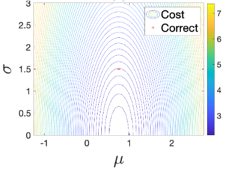
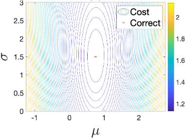
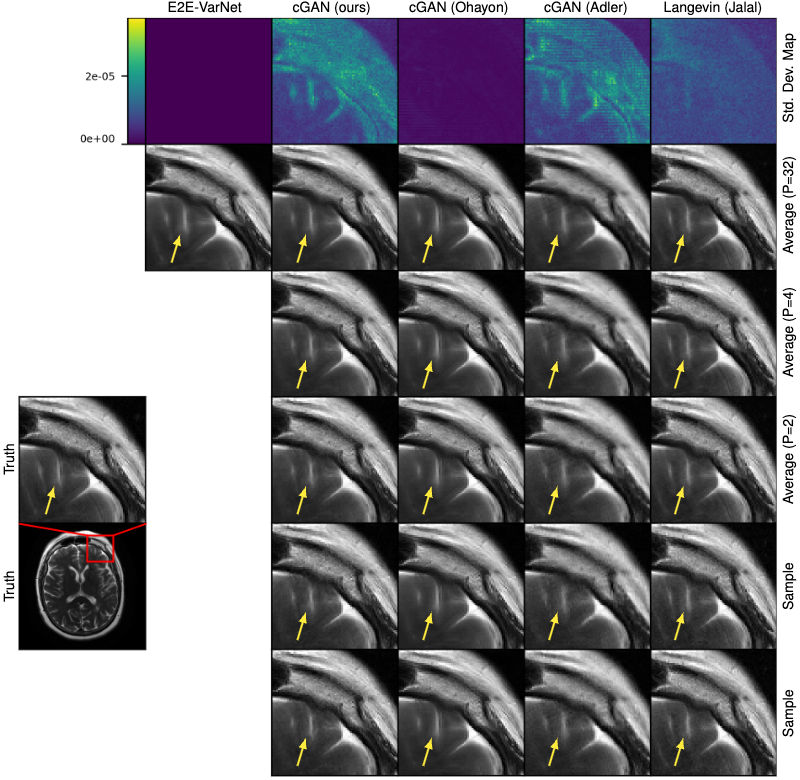
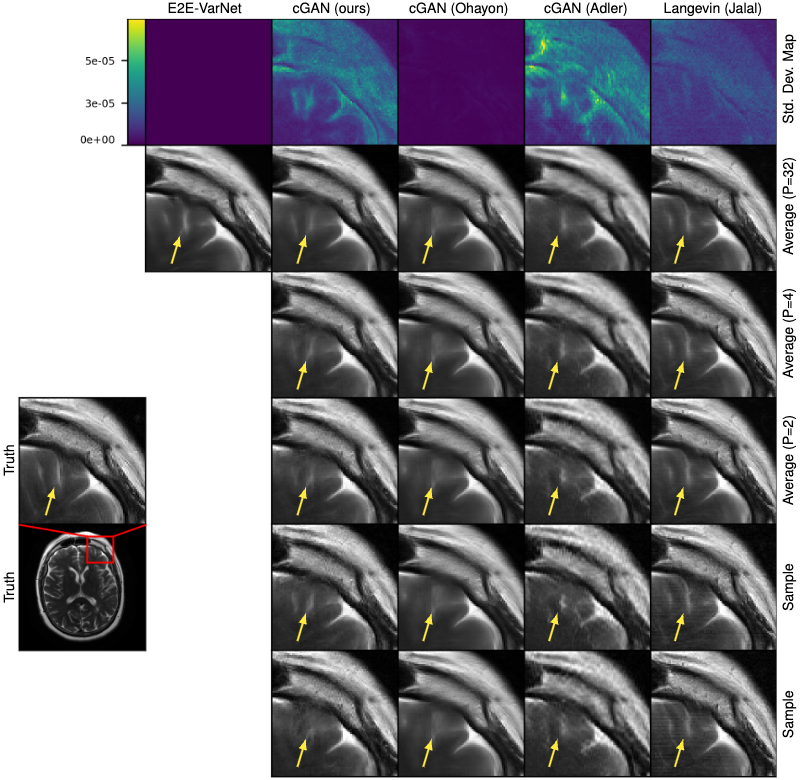

A Regularized Conditional GAN for Posterior Sampling in Image Recovery Problems
NeurIPS 2023
Matthew Bendel
Rizwan Ahmad
Philip Schniter
Abstract
In image recovery problems, one seeks to infer an image from distorted, incomplete, and/or noise-corrupted measurements. Such problems arise in magnetic resonance imaging (MRI), computed tomography, deblurring, super-resolution, inpainting, phase retrieval, image-to-image translation, and other applications. Given a training set of signal/measurement pairs, we seek to do more than just produce one good image estimate. Rather, we aim to rapidly and accurately sample from the posterior distribution. To do this, we propose a regularized conditional Wasserstein GAN that generates dozens of high-quality posterior samples per second. Our regularization comprises an L1 penalty and an adaptively weighted standard-deviation reward. Using quantitative evaluation metrics like conditional Fréchet inception distance, we demonstrate that our method produces state-of-the-art posterior samples in both multicoil MRI and large-scale inpainting applications.
Our Approach
We regularize the generator of our cGAN with a combination of an L1 penalty and a dynamically weighted standard deviation reward. We also prove that regularizing with an L2 penalty on the sample average encourages mode collapse! In a simple Gaussian setting, we can prove that our regularization yields a generator which samples with true posterior statistics. Below, we show the cost surface of our regularization and L2 regularization plotted against the mean and standard deviation of a scalar-Gaussian posterior. For more information, please see our paper!
L2 Regularization
Our Regularization
MRI Reconstruction
We apply rcGAN to multi-coil MRI reconstruction of fastMRI T2 brain images at R=4 and R=8.
R=4
R=8
Large-Scale Image Completion
We apply rcGAN to large-scale image completion, filling in a centered 128x128 square in 256x256 CelebA-HQ images.
Paper
A Regularized Conditional GAN for Posterior Sampling in Image Recovery Problems
Matthew Bendel, Rizwan Ahmad, Philip Schniter
Bibtex
@inproceedings{Bendel:NIPS:23,
title={A Regularized Conitional GAN for Posterior Sampling in Image Recovery Problems},
author={Bendel, Matthew and Ahmad, Rizwan, and Schniter, Philip},
booktitle={Thirty-seventh Conference on Neural Information Processing Systems},
year={2023},
url={https://openreview.net/forum?id=z4vKRmq7UO}
}
Acknowledgements
This webpage inspired by the template that was originally made by Phillip Isola and
Richard Zhang for a colorful ECCV project;
the code for the original template can be found here.
We also take design inspiration from the project page for Uncertainty Quantification via Neural Posterior Principal Components.
This site uses bootstrap and font awesome.